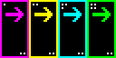
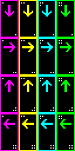
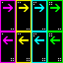
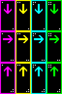

Direction Mode
Direction mode determines number of sprites and the required arragements on the sprite sheet. This only describes number of sprites required, the sprite width and height is controlled by variants.
In content patcher, use a string value like "DirectionMode": "DRUL" to set this value. Internally it is an enum.
Arrangement charts in this page assumes FrameLength is 4, but you can have as many frames as desired. There's also no need to adhere to exact row layout as long as you have the correct number of sprites in the left to right & up to down order, but it is easier to organize this way as the companion's current direction is represented by a number corresponding to which set of animation it will use (with negative number representing flipped sprite), if the rows all have FrameLength number of items, then the direction index is simply the row number.
Direction index is involved in anim clips, where it is used to set different clip per direction as desired.
In the following Direction Index tables, * indicates that this direction will not change the companion's direction index, i.e. it will continue with previous value until the next direction that will change index.
Single
Animate the sprite, ignore all changes to direction. This is the default value.
Number of Sprites Required: 1 x FrameLength (4 by default)

Direction Index
| Direction | Index |
|---|---|
| Down | 1 |
| Right | 1 |
| Up | 1 |
| Left | 1 |
R - Right
Similar Single but the sprite is flipped when going left.
Number of Sprites Required: 1 x FrameLength (4 by default)
Direction Index
| Direction | Index |
|---|---|
| Down | * |
| Right | 1 |
| Up | * |
| Left | -1 |
DRUL - Down Right Up Left
This mode is similar to NPC and animal sprites in the base game. Four sets of animations are required, one per direction.
Number of Sprites Required: 4 x FrameLength (16 by default)

Direction Index
| Direction | Index |
|---|---|
| Down | 1 |
| Right | 2 |
| Up | 3 |
| Left | 4 |
RL - Right Left
Similar to R, but allows you to supply left facing sprites for asymmetrical companions.
Number of Sprites Required: 2 x FrameLength (8 by default)

Direction Index
| Direction | Index |
|---|---|
| Down | * |
| Right | 1 |
| Up | * |
| Left | 2 |
DRU - Down Right Up
Similar to DRUL, but allows you to skip left facing sprites for symmetrical companions.
Number of Sprites Required: 3 x FrameLength (12 by default)

Direction Index
| Direction | Index |
|---|---|
| Down | 1 |
| Right | 2 |
| Up | 3 |
| Left | -2 |